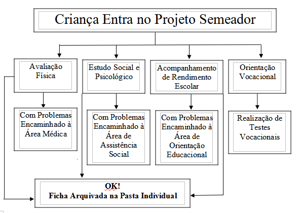

PROJETO SEMEADOR.
1- Introdução:
O futebol é uma paixão nacional. E não poderia ser diferente com as meninas. O futebol feminino, cresce a cada dia. O número de praticantes e telespectadores, aumenta nas mesmas proporções. Visto recentemente, nas Olimpíadas Rio 2016 e na Copa do Mundo. O PROJETO SEMEADOR, visa a formação da criança e do adolescente utilizando-se do esporte como elemento integralizador destas com a sociedade. Nosso projeto integra a Starcoop Cooperativa de Profissionais do Futebol e Desenvolvimento Social. No acompanhamento do desenvolvimento físico-psico-social, deverá ser levado em conta o contexto econômico, bem como as características individuais da personalidade de cada criança, de forma a estimulá-las e orientá-las no campo profissional, como desportista ou não. Buscando-se, para isto, a parceria com instituições afins que viabilizem este PROJETO.
As Fichas com os acompanhamentos e identificação de problemas serão discutidas periodicamente em reunião conjunta.
PROJETO FEMININO.
1- Apresentação:
Toda e qualquer Cidade do país tem sua manifestação cultural e esportiva, destacando-se o futebol. A Cidade de Itaboraí despontou para o cenário nacional com sua atleta conhecida como Tatá, campeã pan-americana com a seleção brasileira de futebol feminino. Jogadora originária do Esporte Clube Comercial. O próprio G. E. Semeador já teve em seus quadros as atletas Rayane e a eterna “Ratinha” campeãs internacionais de futebol de sete. Hoje, no cenário nacional, atletas que já atuaram pelo G. E. Semeador temos no São Paulo F. C. a zagueira Dyneffer Silva, no Fluminense F. C. a zagueira Thayna Monique e as meias campistas Andresa Ferreira, Lene e Maria Luiza, todas vice-campeãs estaduais em 2018 pelo Duque de Caxias F. C. e temos ainda as atletas Thaisa que, segundo últimas informações, se encontra no C. R. Vasco da Gama. Sabe-se que o futebol, além de um esporte, é um catalisador social que integra o ser humano na sociedade, fazendo-o participativo, bem como, possibilitando hoje em dia uma promissora carreira, constituindo-se, portanto, um trabalho de desmarginalização social.
2- Proposta:
O projeto, ora exposto, visa basicamente: Promover a integração social, valorizando-se a família e a cidadania, através das instituições e espaços existentes no Município, reestruturando e direcionando esforços. Dar condições ao G. E. Semeador de preparar melhor suas atletas oferecendo-lhes infraestrutura mínima (campo para treino), assessoria técnica (trabalho em conjunto de preparação física), acompanhamento social (convênio com o serviço Social, visando desenvolver o trabalho junto a família dos atletas). Prestigiar os campeonatos oficiais organizados pela LDI (Liga Desportiva de Itaboraí) proporcionando, o apoio material e a divulgação desses eventos, além de participação em certames de nível regional, estadual e nacional.
3 – Providências e Meios:
Legalização da equipe (CNPJ, Inscrição Municipal e Alvará da FERJ). Realização de acompanhamento sócio-psicológico. Oferecer aos integrantes do projeto, os programas como por exemplo o acompanhamento médico, matrícula da rede municipal de ensino, etc. Disponibilizar transporte para jogos realizados fora dos limites do município, em especial os organizados pela FERJ. O Grêmio Esportivo Semeador oferecerá acompanhamento social à família das crianças atendidas, bem como instrutores de futebol, e assessoria jurídica.
4 – Conclusão.
Mas só a vontade, não basta! Precisamos de investidores e parceiros. Por isso entramos em contato com a sua empresa. Uma marca forte, que através de pesquisa, constatamos que é uma marca socialmente responsável, que pensa no bem-estar da cidade, dos seus cidadãos e contribui para o seu crescimento e desenvolvimento. Em troca, daremos visibilidade à sua marca nas camisas das atletas e comissão técnica, nos banners em treinos e jogos que participarmos, no “Facebook” através de nossas páginas e perfis, e no “Youtube” através de nosso canal. O fato acima refere-se àquelas pessoas envolvidas diretamente com a prática do futebol. Levando-se em conta que, um projeto bem elaborado trará uma popularidade maior aos atletas, aumentando consideravelmente a área populacional atingida, como vizinhos, amigos, etc.